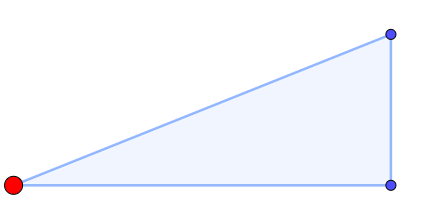
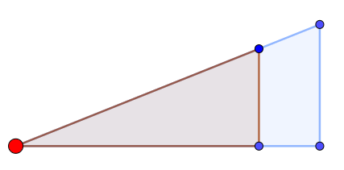
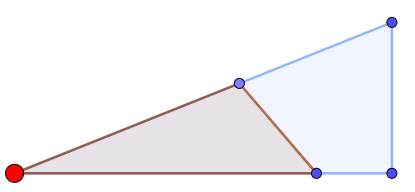

La Posició de Tales
De moment, haureu vist que col·locar els triangles d'una manera o una altra fa que de vegades semblin proporcionals i de vegades no. La manera més fàcil com poden estar col·locats per a que es vegi clarament que sí són semblants s'anomena Posició de Tales. Tales de Milet fou un matemàtic (i filòsof, i físic) grec molt important, que va fer grans avenços dins la geometria.
|
Dos triangles estan en Posició de Tales si estan "encaixats" amb l'altre costat paral·lel. (Formalment: Si comparteixen un vèrtex i els dos costats que en surten estan un damunt l'altre. |
Això escrit és molt més liós que vist. Així que anem a veure-ho:
Sigui un triangle qualsevol:

Ara dibuixem un altre triangle, que també surti des del punt vermell. A més, vull que els altres vèrtexos estiguin a la mateixa línia, però, molt important, han de formar un costat paral·lel a l'oposat (que en aquest exemple, és vertical). Dibuixarem un exemple vàlid i un invàlid:
|
Exemple vàlid: Comparteixen un vèrtex, els dos costats que surten es troben un damunt l'altre, i els costats oposats són paral·lels entre ells:  |
Exemple invàlid: Comparteixen un vèrtex, els dos costats que surten es troben un damunt l'altre, però els costats oposats no són paral·lels.  |
Però, aquí podem veure una cosa més, que en aquest exemple (amb un angle recte) es veu molt més clar que en altres casos. Si els dos costats oposats són paral·lels, llavors els angles amb els que tallen a la base (i també a l'altre costat) han de ser iguals entre ells! I per tant, tenim 2 (3) angles iguals, així que sempre són semblants.
|
Dos triangles en Posició de Tales sempre són semblants. (I per tant, tenen costats proporcionals) |